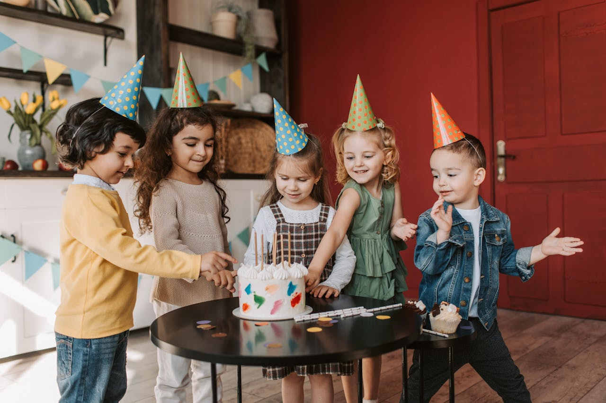

Szolgáltatásaink
Férőhelyek
A férőhelyek száma 7 fő és 5 fő (összesen 12 fő).
2017-től bővítünk további 7 fővel, új csoportszobával tornaszobával.
A családi napköziben 1-5 éves korú gyermekeket fogadunk.
Személyi feltételek:
Az intézményben óvodapedagógus, felsőfokú végzettségű pedagógusok valamint főiskolai végzettségű intézményvezető dolgozik, aki családi bölcsőde vezetői végzettséggel is rendelkezik. Heti egy alkalommal bábfoglalkozást tartunk Benedek Elek Pedagógiai Hetente 1 alkalommal Zenebuborék drámapedagógiai foglalkozást tartunk a gyerekeknek.
Tárgyi feltételek:
A családi bölcsődében szeretetteljes, meleg környezetben gondoskodunk a kisgyerekekről a szüleitől távol töltött időben. Az intézményben két csoportszoba (32, 25 m2) mellett kisméretű mosdókkal és WC csészékkel felszerelt fürdőszoba, továbbá konyha és előtér található. A gyermekek számára az alváshoz kiságyakat, ágyneműt biztosítunk. A gyermekek levegőztetését a családi napközivel szemben erre a célra is épült új játszótéren tudjuk biztosítani. A játszótéren elkerített területen biztonságosan futkározhatnak, homokozhatnak, csúszdázhatnak, motorozhatnak, labdázhatnak a gyerekek.
Programok:
A napköziben két csoport működik, óvodapedagógus vezetésével valósul meg a szakmai háttér.
Hétfőn délelőtt Babos Eszter társulata érkezik hozzánk, bábos előadása során interaktívan vonja be a gyerekeket. Foglalkozásunk három blokkból áll:
- először megismerkedünk a mesével
- ehhez kapcsolódóan kézműveskedünk
- akadálypályát építünk a gyerekeknek, amit többször bejárhatnak.
A drámapedagógiai foglalkozás után a Madárhegyi Sóbarlangba látogatunk el, a parajdi só segítségével erősítjük az immunrendszerünket.
A családi napköziben sokféle játékos, kreatív foglalkozást tartunk. Keddenkét az évszakoknak megfelelően kézműveskedünk . Változatos technikákkal és módszerekkel (gyurmázás, festés, rajzolás, gyöngyfűzés) ismerkednek a gyerekek.
A „Littlebird Csiripelő/Twittery English” foglalkozásokon szerda-csütörtök délelőtt, heti két alkalommal a gyerekek játékosan, szerepjátékokat használva, zenés, táncos formában ismerkednek az angol nyelvvel. 2014-től fokozatosan a mindennapi angol foglalkozásokra térnek át.
Péntek délelőtt az egyensúly-, mozgáskoordináció és ritmusérzék fejlesztése , téri orientáció, tartásjavítás, lábboltozat erősítése érdekében „Bogyótornán” a Pető Intézet konduktora foglalkozik a gyerekekkel.
A ritmusos mozgással kísért mondókázás, éneklés már a legkisebbek érdeklődését is felkelti. Fejlesztésük az élményekhez kapcsolt zenehallgatáson, a zene, a mozgás, a játék összekapcsolásán keresztül történik. A „Zenebuborékkal” a mesék világába visszük a gyerekeket. A népi és kortárs mondókákkal, világzenékkel és sok énekléssel szervezett zenés drámafoglalkozást Bisztricsány Linda színésznő vezeti, szerdánként 9.15 órai kezdettel. A foglalkozás fejleszti a képzeletet, beszédkészséget, ritmusérzéket, hallást, figyelmet.
Egyéni igények figyelembevételével hétvégén háromórás időtartamban születésnapi rendezvényeket is szervezünk.
Kedden és csütörtökön délután 17.00 órai kezdettel, hetente két alkalommal lehetőség van anyanyelvi szinten beszélő óvodapedagógus vezetésével angol foglalkozásra járni.
A Pető Intézet Konduktora szintén hetente két délutánon tart képesség- és készségfejlesztő tornát. Szerdán 16.00 és 17.00 órai kezdettel, pénteki napokon 17.00 órától.
Gyermekfelügyelet
Fontosnak érezzük, hogy a gyermekek önfeledt boldogsága mellett a szülőknek is nyugodt perceket szerezzünk. Néha kell, hogy Anyu és Apu kettesben is eltölthessen néhány órát! De adódhat olyan helyzet is, hogy a kicsiket nem tudják magukkal vinni ügyeket intézni, kórházba, interjúra. Van, akinek abban kell segíteni, hogy gyermekei biztonságban jussanat haza az iskolából, óvódából és út közben esetleg még egy játszótérre és bemehessenek szaladgálni még egyet. Vállaljuk, hogy az ilyen helyzetekben is szívesen áll a szülők rendelkezésére szaképzett és a gyermekek által más ismert gondozói csapata segítségével.

Kézműves kreativ
- gyurmázás
- festés
- rajzolás
- hajtogatás
- aktuális ünnepekre való készülődés
Zene és mozgás
- daltanulás ritmushangszerrel
- táncolás
- dallamos mondókák mozgással
- labdás játékok
- mondókák
- játékos torna
Fejlesztés
- színtanuló játékok
- mozgásos feljelsztők
- logikai készség fejlesztés
- beszéd és kommunikácó fejlesztés
- óvoda előkészítő játékok
Kihelyezett gyermekfelügyelet
Van úgy, hogy a család egyszerre vesz részt olyan rendezvényen (például esküvőn, keresztelőn, családi rendezvényeken), ahol a gyermekek hamar elunják magukat, hiszen nincsen számukra megfelelő szórakozási lehetőség. A Babapihenő csapata vállalja, hogy az ilyen családi rendezvényeken, a hely és az esemény jellegének megfelelően gondoskodik a kicsik szórakoztatásáról, és így szüleik is önfeledten kikapcsolódhatnak.

Születésnapi zsúrok
A szülők akkor a legboldogabbak, ha látják, hogy csemetéjük vidáman játszik a barátaival. Az utána következő rendrakás viszont bizonyára mindenki rémálma. Ezen segítünk: szervezze babazsúrját/gyermeke születésnapi buliját a Babapihenőbe – Önnek csak az enni-,innivalóról kell gondoskodnia, a játékok előkészítése és a buli utáni elpakolás/takarítás már a mi feladatunk!
